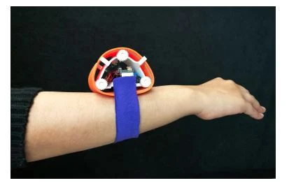
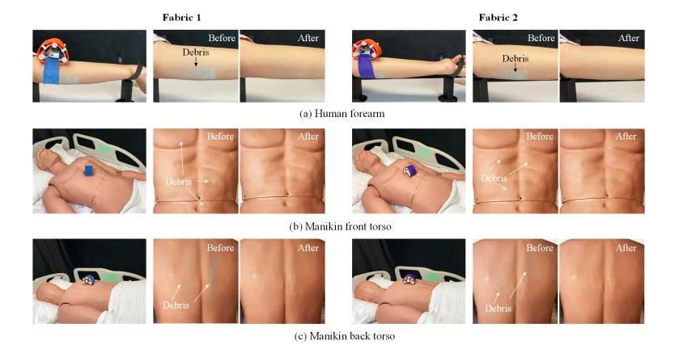

SOFT ROBOTICS / WEARABLESScrunchie Robot — Wearable Bathing Assistance
A compact, fabric-based meso-scale robot investigated for movement across the human body. The team evaluated different fabric configurations on cylindrical surfaces, a forearm, and a mannequin torso.
Explore case study
The research challenge
Investigate a compact, compliant, modular, low-cost robot capable of moving across curved body surfaces, with bathing assistance as the motivating application.
Design considerations
Comfort through a lightweight form factor; flexible and soft components for human interaction; adaptability to different body geometries; accessible and reproducible fabrication.
Experimental evaluation
Fabric variants were tested on a PVC pipe, a human forearm, and the front and back of a mannequin torso. The original experiment videos below were extracted from the team's presentation.
Research and collaborators
Associated paper: Characterization of a Meso-Scale Wearable Robot for Bathing Assistance. Authors: Fukang Liu, Vaidehi Patil, Zackory Erickson, and Zeynep Temel. Specific individual responsibilities are not attributed in the source presentation.
Read the IEEE publication ↗Original project images
